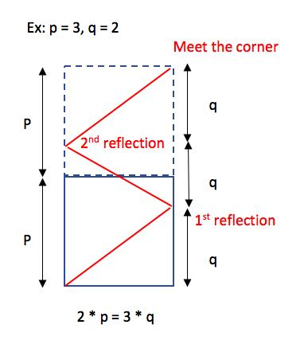

LC 858. Mirror Reflection
https://leetcode.com/problems/mirror-reflection/
在写之前我特意看了一下题解，真是太畜生了，原来是有数学方法可以解决的。我的方法是比较笨的模拟，但是我觉得还是值得写写的，因为最后写出来其实没有太多的分支判断。
我的思路是这样的：
- 光线先处于起始点(0,0), 然后假设以dx=p, dy=q的速度前进
- 肯定是x或者是y先到达边缘，x的边缘是[0, p], y的边缘是[0, p]
- 如果是x到达边缘的话，那么dx就会变换方向
- 如果是y到达边缘的话，那么dy就会变换方向
class Solution:
def mirrorReflection(self, p: int, q: int) -> int:
x, y = 0, 0
dx, dy = p, q
eps = 1e-6
def near(x, y, a, b):
return abs(a - x) < eps and abs(b - y) < eps
def eq(x, y):
return abs(x - y) < eps
ans = -1
while True:
if near(x, y, p, 0):
ans = 0
break
if near(x, y, p, p):
ans = 1
break
if near(x, y, 0, p):
ans = 2
break
if dx > 0:
tx = (p - x) / dx
else:
tx = -x / dx
if dy > 0:
ty = (p - y) / dy
else:
ty = -y / dy
t = min(tx, ty) # x,y某一个先到达边缘
x += dx * t
y += dy * t
# print('>>>', x, y, dx, dy)
# 如果到达边缘，调整行进方向，但是其实速度是不变的
if eq(x, 0) or eq(x, p):
dx = -dx
if eq(y, 0) or eq(y, p):
dy = -dy
return ans
UPDATE: https://leetcode.com/problems/mirror-reflection/discuss/146336/Java-solution-with-an-easy-to-understand-explanation 这个解释很棒

First, think about the case p = 3 & q = 2. So, this problem can be transformed into finding m * p = n * q, where m = the number of room extension + 1. n = the number of light reflection + 1. If the number of light reflection is odd (which means n is even), it means the corner is on the left-hand side. The possible corner is 2. Otherwise, the corner is on the right-hand side. The possible corners are 0 and 1. Given the corner is on the right-hand side. If the number of room extension is even (which means m is odd), it means the corner is 1. Otherwise, the corner is 0. So, we can conclude: m is even & n is odd => return 0. m is odd & n is odd => return 1. m is odd & n is even => return 2. Note: The case m is even & n is even is impossible. Because in the equation m * q = n * p, if m and n are even, we can divide both m and n by 2. Then, m or n must be odd. --